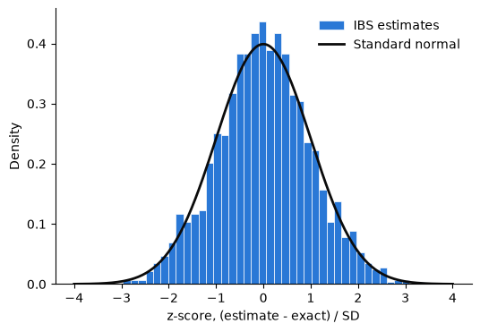

PyIBS Example 1: Basic usage and calibration#
This notebook introduces inverse binomial sampling (IBS): estimate a model’s log-likelihood by simulating its responses, and attach an estimate of the uncertainty to each result. We use a model with a closed-form likelihood so that we can check the estimates against a known value, then explore how the number of repeats changes their noise and cost.
This is the first of three examples. The second fits the same model with PyBADS; the third uses PyVBMC for Bayesian inference. The notebook’s code is also available as a Python script.
See the installation guide for PyIBS and the packages needed to run this notebook.
import sys
if "google.colab" in sys.modules: # Colab lacks PyIBS: install it
%pip install "pyibs>=1.5"
import math
import matplotlib.pyplot as plt
import numpy as np
from scipy.stats import norm
from pyibs import IBS, ibs_basic
from pyibs.examples.psycho_model import psycho_generator, psycho_neg_logl
0. From simulations to a log-likelihood#
For many models, generating a response is easy while computing its probability is difficult. IBS is for data with discrete responses: it estimates the log-probability of each observed response from independent simulations under that trial’s conditions. It draws responses until the first match. If the match arrives at sample \(K\), the estimate for that trial is
A first-sample match gives 0. For any positive matching probability \(p_i\), the expected estimate is exactly \(\log p_i\): this is the unbiasedness property of IBS. Adding the independent trials’ estimates gives the data’s log-likelihood estimate. IBS also estimates its variance, and averaging several independent repeats reduces that variance.
The expected cost of a trial is \(1/p_i\) simulated responses per repeat. Rare responses therefore take more work. A response with probability zero never matches.
PyIBS implements this procedure in Python. It can return an estimate together with its estimated standard deviation (SD), which lets PyBADS optimize a noisy likelihood and PyVBMC infer a posterior from one. The lab’s model-fitting page presents the three packages together.
1. A model with a known likelihood#
The orientation discrimination model from the IBS paper describes an observer judging a stimulus of orientation \(s\), in degrees. The response is rightwards (\(r=1\)) or leftwards (\(r=-1\)). The observer measures \(s\) with Gaussian noise of SD \(\sigma\) and responds rightwards when the measurement reaches the bias \(\mu\). On a fraction \(\gamma\) of trials, called lapses, the observer responds at random. We write the parameters as \(\theta=(\eta,\mu,\gamma)\), where \(\eta=\log\sigma\).
PyIBS includes the model in pyibs.examples.psycho_model. psycho_generator(theta, S, rng) draws one response for each orientation in S, using the NumPy generator rng. The companion function psycho_neg_logl(theta, S, R) evaluates the negative log-likelihood of responses R from the closed form
where \(\Phi\) is the standard normal cumulative distribution function. A closed-form likelihood is the best choice for fitting this model. Here it supplies a reference for learning and checking IBS.
We generate 600 trials with orientations drawn from a normal distribution of SD 3°, and responses at \(\theta_\text{true}=(\log 1,0.2,0.03)\). This is the data-generation recipe of MATLAB IBS’s ibs_example.m. All three notebooks use the same data seed. Separate seeds spawned from one root seed supply independent streams for the data and the estimates, and make repeated runs reproducible.
# Independent seeds for the data and for the IBS estimates
seed_data, seed_ibs, seed_basic = np.random.SeedSequence(2026).spawn(3)
theta_true = np.array([math.log(1.0), 0.2, 0.03]) # log(sigma), bias, lapse
n_trials = 600
rng = np.random.default_rng(seed_data)
S = 3 * rng.standard_normal((n_trials, 1)) # Orientation of each trial
R = psycho_generator(theta_true, S, rng) # Response of each trial
print("First orientations:", S[:5, 0].round(2))
print("First responses: ", R[:5, 0])
print(f"Rightwards responses: {np.mean(R == 1):.1%}")
First orientations: [ 0.33 0.33 0.6 -0.58 -0.62]
First responses: [ 1. -1. 1. 1. -1.]
Rightwards responses: 45.2%
2. Calling IBS#
An IBS object stores the simulator, the observed responses and each trial’s conditions. response_matrix and design_matrix each have one row per trial; here the design rows contain the orientations. When called with a parameter vector, the object asks the simulator for responses at that vector and returns an estimate.
The simulator receives the design rows of the trials being sampled. A trial can appear several times in one call, and every requested row must produce an independent response. Since psycho_generator has a parameter named rng, IBS passes it the object’s generator, seeded by random_seed. Giving the object a seed separate from the data’s seed keeps these simulations independent of the draws that generated the data.
We set vectorized=True to request several samples per trial in each simulator call. This suits a model that can simulate many responses cheaply at once. It also fixes the sampling schedule: the default vectorized=None times one sample of every trial at the object’s first call with more than one repeat, and keeps its scheduling decision for later calls. A seed alone does not fix that timing decision.
ibs = IBS(psycho_generator, R, S, vectorized=True, random_seed=seed_ibs)
neg_logl = ibs(theta_true)
print(f"Negative log-likelihood estimate: {neg_logl:.2f}")
Negative log-likelihood estimate: 148.93
A call returns the negative log-likelihood by default, averaged over num_reps=10 independent repeats. This is the sign an optimizer minimizes; return_positive=True returns the log-likelihood.
With additional_output="std", the result is a tuple (value, sd), ready for a method that accepts noisy evaluations. additional_output="var" supplies the variance estimate instead. Every call uses fresh samples, so repeated calls at the same parameters give independent estimates.
neg_logl, neg_logl_sd = ibs(theta_true, additional_output="std")
print(
f"Negative log-likelihood estimate: {neg_logl:.2f} +/- {neg_logl_sd:.2f}"
)
Negative log-likelihood estimate: 151.12 +/- 3.33
additional_output="full" returns an EstimateResult, a dictionary whose keys can also be read as attributes:
neg_logl,neg_logl_varandneg_logl_stdgive the estimate, its variance estimate and the square root of that variance estimate.exit_flagandmessagedescribe how sampling finished. Flag 0 means every repeat completed without reaching the likelihood threshold. Flag 1 means the thresholdneg_logl_thresholdended a repeat, and flag 2 that the time limitmax_timestopped sampling; either biases the estimate. Both settings are disabled here, as they are by default. The FAQ explains the exit flags.elapsed_timemeasures the call’s duration in seconds.num_samples_per_trialandfun_countcount simulated responses per trial and simulator calls, including surplus responses after a trial’s last match.neg_logl_trialsandneg_logl_var_trialsgive the per-trial estimates and variance estimates. With the unit trial weights used here, they sum to the totals.
result = ibs(theta_true, additional_output="full")
print(result)
neg_logl: 152.69756373253406
neg_logl_var: 11.080884558590599
neg_logl_std: 3.3287962627037717
exit_flag: 0
message: 'All requested IBS repeats completed without reaching the likelihood threshold.'
elapsed_time: 0.0016367000062018633
num_samples_per_trial: 26.493333333333332
fun_count: 10
neg_logl_trials: array([0.55 , 0.48333333, 0.35 , ..., 0. , 0. ,
0. ], shape=(600,))
neg_logl_var_trials: array([0.0475 , 0.04361111, 0.0325 , ..., 0. , 0. ,
0. ], shape=(600,))
For readers moving from MATLAB IBS, num_reps corresponds to Nreps, additional_output="std" to ReturnStd, and return_positive to ReturnPositive.
3. Comparing one estimate with the known value#
The closed-form likelihood gives the exact negative log-likelihood at the same parameter vector. Expressing the difference in units of the reported SD makes its size easier to assess.
exact = psycho_neg_logl(theta_true, S, R)
print(f"IBS estimate: {neg_logl:.2f} +/- {neg_logl_sd:.2f}")
print(f"Exact value: {exact:.2f}")
print(f"Difference: {(neg_logl - exact) / neg_logl_sd:.2f} SDs")
IBS estimate: 151.12 +/- 3.33
Exact value: 152.47
Difference: -0.41 SDs
4. Checking the mean and uncertainty#
Unbiasedness concerns the mean over repeated estimates. Variance calibration concerns the mean of the reported variance estimates: it should match the variance of the estimates themselves. Neither property alone makes individual estimates Gaussian.
We draw 2,000 estimates at \(\theta_\text{true}\), with 10 repeats each, and examine three quantities:
the mean estimate, compared with the exact value and the standard error of that mean;
the empirical SD of the estimates, compared with the root mean square of their reported SDs, which is the square root of the mean reported variance;
the distribution of \(z=(\text{estimate}-\text{exact})/\text{sd}\), compared with a standard normal curve.
Here each estimate combines many independent trial contributions and repeats, so a Gaussian approximation is plausible. The histogram checks how well it works for this model, data set and parameter vector.
n_estimates = 2000
estimates = np.array(
[ibs(theta_true, additional_output="std") for _ in range(n_estimates)]
)
values, sds = estimates[:, 0], estimates[:, 1]
z = (values - exact) / sds
standard_error = values.std(ddof=1) / math.sqrt(n_estimates)
reported_sd = math.sqrt(np.mean(sds**2)) # Root mean square of the SDs
print(f"Exact value: {exact:.2f}")
print(f"Mean of the estimates: {values.mean():.2f} +/- {standard_error:.2f}")
print(f"SD of the estimates: {values.std(ddof=1):.2f}")
print(f"RMS reported SD: {reported_sd:.2f}")
print(f"z-scores: mean {z.mean():.3f}, SD {z.std(ddof=1):.3f}")
Exact value: 152.47
Mean of the estimates: 152.54 +/- 0.07
SD of the estimates: 3.28
RMS reported SD: 3.33
z-scores: mean 0.013, SD 0.983
fig, ax = plt.subplots(figsize=(6, 4))
ax.hist(
z,
bins=40,
density=True,
color="#2a78d6",
edgecolor="white",
linewidth=0.5,
label="IBS estimates",
)
x = np.linspace(-4, 4, 201)
ax.plot(x, norm.pdf(x), color="#0b0b0b", linewidth=2, label="Standard normal")
ax.set_xlabel("z-score, (estimate - exact) / SD")
ax.set_ylabel("Density")
ax.spines[["top", "right"]].set_visible(False)
ax.legend(frameon=False)
plt.show()

In this run, the mean estimate is close to the exact value, and the empirical SD is close to the root mean square reported SD. The z-score histogram is also close to a standard normal curve. These observations support the uncertainty estimates and a Gaussian noise approximation for this example. With fewer trials, fewer repeats or many first-sample matches, the distribution can be less Gaussian; the reported SD is itself an estimate.
5. Trading cost for precision#
num_reps controls how many independent estimates are averaged. The variance of the average is inversely proportional to num_reps, and its SD is inversely proportional to its square root. The expected number of samples needed for the matches grows in proportion to the repeats. With vectorized=True, a trial’s last call can request more samples than it needs, which adds some surplus.
print("num_reps SD SD * sqrt(num_reps) samples per trial calls")
for num_reps in [3, 10, 30, 100, 300, 1000]:
result = ibs(theta_true, num_reps=num_reps, additional_output="full")
print(
f"{num_reps:8d} {result.neg_logl_std:6.2f} "
f"{result.neg_logl_std * math.sqrt(num_reps):20.2f} "
f"{result.num_samples_per_trial:19.1f} {result.fun_count:7d}"
)
num_reps SD SD * sqrt(num_reps) samples per trial calls
3 6.13 10.62 7.8 11
10 3.31 10.45 25.1 10
30 1.92 10.51 86.9 10
100 1.05 10.53 290.3 9
300 0.61 10.52 792.2 10
1000 0.33 10.54 2116.9 24
The reported SD * sqrt(num_reps) stays near the SD of a single repeat. The sample count grows roughly with num_reps, while requesting several samples per trial in each call keeps the number of simulator calls small. num_samples_per_trial counts all responses, including those generated after a trial has enough matches.
For fitting, choose the precision where the fit matters. PyBADS works best with an SD of about 1 or less near the solution; PyVBMC works best around 1, and not much above 3, where the posterior has most of its mass. Larger noise far from the solution is usually manageable. The FAQs of PyBADS and PyVBMC explain these recommendations. For this data set, 100 repeats give an SD near 1; both later notebooks use that setting. Expensive simulations may require fewer repeats and a noisier target.
6. Reading the basic algorithm#
ibs_basic exposes IBS as a short loop in pyibs/ibs_basic.py. It visits one trial at a time, simulates until a response matches, then adds the trial’s estimate. The function is intended for teaching and follows the structure of MATLAB’s ibs_basic.m; use IBS for fitting.
It returns one repeat’s log-likelihood estimate and calls the simulator with one design row at a time, here a single orientation. It supplies no variance estimate.
loglik_basic = ibs_basic(
psycho_generator, theta_true, R, S, random_seed=seed_basic
)
print(f"ibs_basic estimate (one repeat): {loglik_basic:.2f}")
print(f"Exact log-likelihood: {-exact:.2f}")
ibs_basic estimate (one repeat): -145.27
Exact log-likelihood: -152.47
A single repeat has roughly the SD shown in the SD * sqrt(num_reps) column above, so this estimate is appreciably noisier than the averages.
7. Using these estimates in a fit#
The simulator supplies the responses from which IBS forms its estimate, the reported variance describes its uncertainty, and the number of repeats controls the cost of reducing that uncertainty. A model with a known likelihood lets us check each part before using the same interface with a harder model.
The next notebook fits this data set by maximum-likelihood estimation with PyBADS. The third uses PyVBMC to infer a posterior and model evidence.
Reference#
van Opheusden, B., Acerbi, L. & Ma, W. J. (2020). Unbiased and efficient log-likelihood estimation with inverse binomial sampling. PLOS Computational Biology 16(12): e1008483. https://doi.org/10.1371/journal.pcbi.1008483